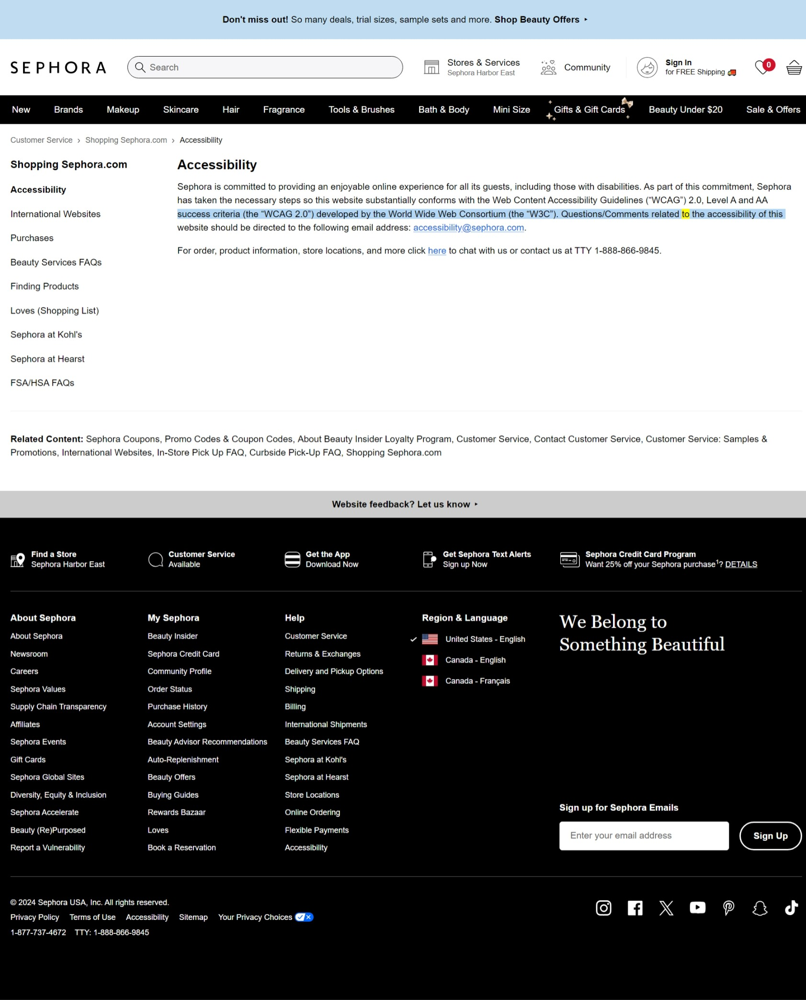

The URL of the site is https://www.sephora.com.
The name of the site I evaluated is called Sephora.
The website targets individuals interested in purchasing or becoming knowledgeable about cosmetics, as well as skin care, hair care, and perfumes.
The site was created in a linear organization style.
The website uses all principles of Crap Design: contrast, repetition, size, shape, alignment, and proximity.
The site scored 68 according to the accessibility checker, which was the lowest score of all the sites I tested.
The site worked well; it loaded quickly, and navigating to sections of items was swift and seamless.
Performing tasks is rather quick on this site, according to my experiences browsing websites.
Engagement on the Sephora site was pleasant; navigating my way around the site was simple. I purposely misspelled "lotion" in the search tab, and I was directed to the lotion section despite the incorrect spelling.
The site is pleasant to use; there is even a search bar at the top of the website.
Yes, the site is quite perfect for its industry. I find the site to be extremely organized, with all categories displayed at the top.
I would recommend adding an audio option as an accessibility option for individuals with intellectual disabilities. I consider adding that particular feature as an accessibility recommendation because most individuals with intellectual disabilities find spelling to be difficult.
